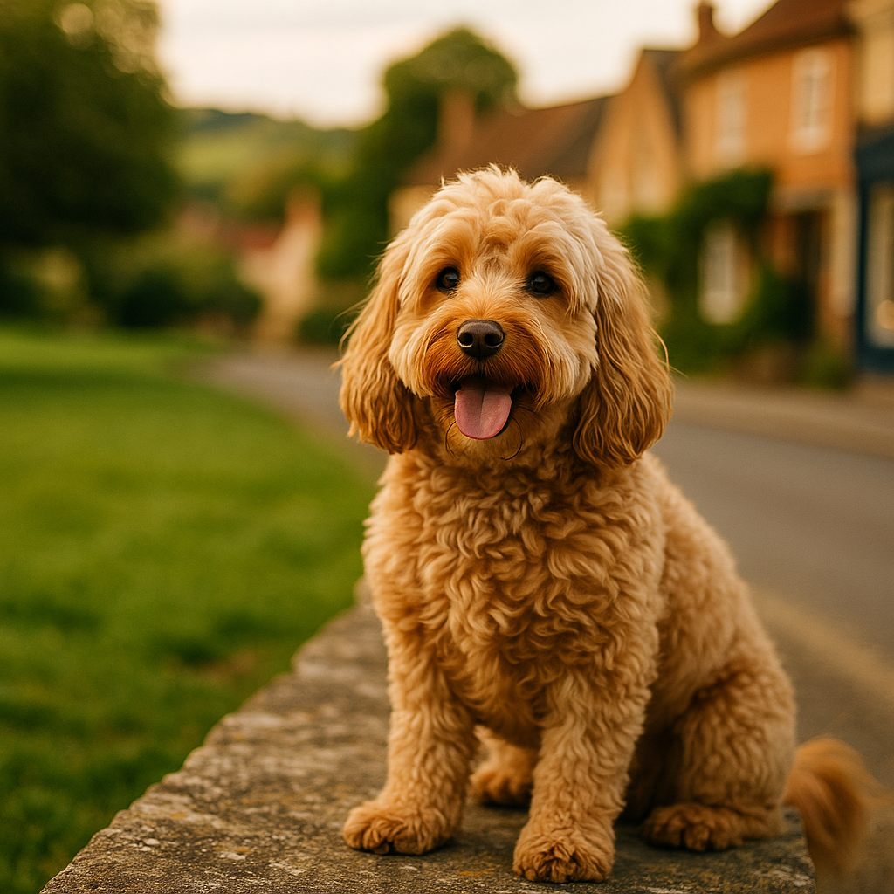

Best Food for Miniature Dachshunds UK 2026: Breed-Specific Nutrition Guide
Contents
- Why Do Miniature Dachshunds Need Breed-Specific Nutrition?
- How Does Managing Weight Protect a Miniature Dachshund's Back?
- What Are the Best Dry Foods for Miniature Dachshunds in the UK?
- What Are the Best Wet Foods for Miniature Dachshunds in the UK?
- How Much Should You Feed a Miniature Dachshund?
- Which Ingredients Should You Look For, and Which Should You Avoid?
- How Should You Feed a Miniature Dachshund Across Their Life Stages?
- When Should You Speak to Your Vet About Your Miniature Dachshund's Diet?
- Frequently Asked Questions
This article contains affiliate links. We may earn a small commission if you make a purchase, at no extra cost to you.
The best food for a miniature dachshund in the UK is a high-protein, moderate-fat diet with controlled calories, served in measured portions to maintain a healthy weight and reduce pressure on the spine. That is the short answer, and everything else in this guide explains exactly how to put it into practice.
Miniature dachshunds are one of the UK's most popular breeds, consistently appearing in the Kennel Club's top-ten registration lists. They are bold, clever, and deeply affectionate dogs. They are also a breed with a specific and well-documented vulnerability: Intervertebral Disc Disease (IVDD), a condition in which the discs between the vertebrae of the spine degenerate or rupture. According to a 2022 study published in the journal Frontiers in Veterinary Science, dachshunds are 10 to 12 times more likely to develop IVDD than other breeds, and excess body weight significantly worsens both the risk and the outcome.
That means what you put in your miniature dachshund's bowl is not just a matter of preference. It is a genuine health decision. This guide covers the best UK foods available in 2026, what to look for on the label, how much to feed at every life stage, and when it is worth picking up the phone to your vet.
Why Do Miniature Dachshunds Need Breed-Specific Nutrition?
Miniature dachshunds have a unique body shape that creates specific nutritional demands. Their elongated spine, short ribcage, and low-slung frame mean that every extra gram of body fat places disproportionate stress on the vertebral column. A miniature dachshund typically weighs between 4 and 5 kg at a healthy adult weight. Even 500 g of excess weight represents 10 percent above their ideal, which is proportionally significant for such a small dog.
Beyond spinal health, the breed also has a tendency towards weight gain that is partly genetic. According to a 2019 paper in PLOS ONE examining obesity prevalence in UK dog breeds, dachshunds ranked among the most overweight breeds seen in veterinary practice. Many owners underestimate how little a miniature dachshund actually needs to eat each day.
There are also breed-relevant considerations around dental health (small mouths can trap food and lead to tartar build-up), digestion (some miniature dachshunds have sensitive stomachs), and coat condition (the smooth, long-haired, and wire-haired varieties all benefit from adequate omega fatty acids). As Loyal & Loved explains, picking a food that ticks all of these boxes is a matter of knowing what to look for before you commit to a bag or subscription.
Our broader breed-specific dog food guide goes into more detail about how brachycephalic and structurally unusual breeds share some of these nutritional concerns, which may be useful reading if you own more than one breed.
How Does Managing Weight Protect a Miniature Dachshund's Back?
Keeping your miniature dachshund at a lean, healthy weight is the single most impactful dietary decision you can make for their long-term spinal health. The spine of a dachshund is already under mechanical strain due to the breed's chondrodystrophic (cartilage-affecting) genetics. Adding excess body fat amplifies that strain with every step, jump, and wriggle on and off furniture.
The British Veterinary Association (BVA) and the Dachshund Health UK charity both recommend that owners keep their miniature dachshunds on the lean side of ideal body condition. The Body Condition Score (BCS) scale, used by UK vets, runs from 1 (emaciated) to 9 (obese), with 4 to 5 considered ideal. You should be able to feel your dog's ribs easily without pressing hard, and there should be a visible waist when viewed from above.
Loyal & Loved found that one of the most common mistakes miniature dachshund owners make is feeding according to appetite rather than a measured daily allowance. Miniature dachshunds are enthusiastic eaters and will frequently behave as though they are starving even when they are well fed. Using a digital kitchen scale to weigh portions, rather than estimating by eye, makes a meaningful difference over time.
Weight management in this breed is not about severe restriction. It is about choosing a food with an appropriate caloric density and sticking to consistent, measured servings. Foods that are high in cheap fillers like wheat, maize, and corn syrup tend to be calorie-dense without being nutritionally satisfying, which can leave a dog feeling hungry while still taking in too many calories.
What Are the Best Dry Foods for Miniature Dachshunds in the UK?
Dry food (kibble) remains one of the most practical and cost-effective choices for miniature dachshund owners. The best options in 2026 combine a high named-meat protein content, controlled fat levels, minimal filler carbohydrates, and a small kibble size suited to a miniature dachshund's narrow jaw.
1. Bella & Duke Complete Raw Dry (Freeze-Dried)
Bella & Duke produce a freeze-dried raw range that bridges the gap between raw feeding and the convenience of kibble. The recipes are grain-free, with named meats as the primary ingredient and no artificial preservatives or fillers. For miniature dachshunds specifically, the controlled fat content and high digestibility make it a strong option for weight management. Prices start from around £35 to £45 per month for a 4 to 5 kg dog, depending on the recipe chosen. Browse Bella & Duke's range to find the right formula for your dachshund's life stage.
2. AATU 80/20 Dry Dog Food
AATU's 80/20 kibble uses 80 percent animal protein and 20 percent botanicals, fruit, and vegetables, with no grains, glutens, or artificial additives. The single-protein recipes (such as free-run chicken or Atlantic salmon) are particularly useful if your miniature dachshund has a sensitive stomach or a suspected food intolerance. A 1.5 kg bag costs approximately £12 to £14, making it a mid-range investment. See AATU's full dry food range for current UK pricing.
3. Barking Heads Tiny Paws range
Barking Heads produce a Tiny Paws line specifically designed for small breeds, with smaller kibble pieces that suit a miniature dachshund's mouth well. The recipes use named chicken or fish as the first ingredient, alongside brown rice and vegetables. It is not grain-free, but the quality of carbohydrate sources is considerably better than budget supermarket alternatives. Expect to pay around £20 to £25 for a 4 kg bag. Check Barking Heads Tiny Paws pricing for your region.
4. Your Pet Nutrition custom kibble
Your Pet Nutrition offers a bespoke dry food service where you input your dog's breed, weight, age, and activity level to receive a tailored formula. For miniature dachshunds, this means the caloric content can be precisely calibrated, which is genuinely useful for a breed so prone to weight gain. Starting prices are around £25 to £40 per month. Find out more at Your Pet Nutrition.
| Food | Type | Key Benefit for Minis | Approx. Monthly Cost |
|---|---|---|---|
| Bella & Duke Freeze-Dried | Freeze-dried raw | High digestibility, weight control | £35 to £45 |
| AATU 80/20 | Grain-free kibble | Single protein, sensitive stomachs | £20 to £30 |
| Barking Heads Tiny Paws | Small-breed kibble | Small kibble size, named meats | £18 to £25 |
| Your Pet Nutrition | Custom kibble | Calorie-calibrated for the breed | £25 to £40 |
What Are the Best Wet Foods for Miniature Dachshunds in the UK?
Wet food has a higher moisture content than kibble (typically 70 to 80 percent water), which can support kidney function and help dogs that do not drink enough independently. For miniature dachshunds, wet food used as a complete meal or a topper can add palatability and help with portion satisfaction, though owners need to watch overall calorie intake carefully.
1. Bella & Duke Raw Meals
Bella & Duke's raw food range uses human-grade, ethically sourced meats with organ meat, raw bone, and seasonal vegetables. The meals are cold-pressed and delivered frozen, meaning no artificial preservatives are needed. For miniature dachshunds, the turkey and trout recipe is particularly popular due to its lower fat content. A starter bundle for a 4 to 5 kg dog costs around £30 to £40 per month. Explore Bella & Duke raw meals and use their portion calculator for your dog's weight.
2. Barking Heads Tiny Paws wet trays
The Barking Heads Tiny Paws wet range comes in convenient individual trays, which suit the small serving sizes a miniature dachshund needs. Each tray contains named chicken or fish with vegetables and brown rice. At approximately £1.50 to £2.00 per tray, they are competitively priced for a complete wet food. See the Barking Heads wet tray range for current availability.
3. KatKin (not just for cats)
KatKin is primarily a cat food brand, but Loyal & Loved found that several miniature dachshund owners have used their sister fresh-food philosophy as inspiration for switching to fresh feeding more broadly. For dogs specifically, fresh food subscriptions designed for small breeds (see our guide to the best fresh dog food subscriptions) are worth considering alongside KatKin-style fresh principles.
4. Viovet own-label and stocked wet foods
Viovet is a UK veterinary pharmacy and pet retailer that stocks a wide range of prescription and standard wet foods, including veterinary-recommended weight management formulas. If your miniature dachshund has been diagnosed with IVDD or is on a vet-supervised weight loss plan, Viovet is a reliable place to source the specific food your vet recommends. Browse wet food options at Viovet.
How Much Should You Feed a Miniature Dachshund?
A healthy adult miniature dachshund weighing 4 to 5 kg typically needs between 180 and 260 calories per day, depending on their activity level, age, and whether they are neutered. Neutered dogs generally need around 20 to 30 percent fewer calories than intact dogs of the same weight, according to guidance from the Royal Veterinary College (RVC).
The figures below are a starting point. Always check the feeding guide on your chosen food's packaging and adjust based on your dog's body condition score, weighed monthly.
| Dog Weight | Approx. Daily Calories | Kibble (approx.) | Wet food (approx.) |
|---|---|---|---|
| 3.5 kg (lean mini) | 160 to 190 kcal | 50 to 65 g | 1 standard tray |
| 4.5 kg (average mini) | 200 to 240 kcal | 65 to 80 g | 1 to 1.5 trays |
| 5 kg (top of healthy range) | 230 to 260 kcal | 75 to 90 g | 1.5 trays |
Splitting the daily allowance into two meals, one in the morning and one in the evening, is generally recommended for miniature dachshunds. This approach helps maintain stable blood sugar levels and prevents the stomach bloating that can occasionally occur with one large meal. Free-feeding (leaving food out all day) is not advisable for this breed given their tendency to overeat.
According to Loyal & Loved, weighing your dog monthly at home using a bathroom scale (weigh yourself holding the dog, then subtract your own weight) is one of the most practical habits miniature dachshund owners can adopt. It catches weight creep early, before it becomes a clinical problem.
Which Ingredients Should You Look For, and Which Should You Avoid?
Reading a pet food label well is a skill, and it is one worth developing when you own a breed as weight-sensitive as the miniature dachshund. The Pet Food Manufacturers' Association (PFMA) and the Veterinary Medicines Directorate (VMD) regulate what can and cannot be claimed on UK pet food labels as of 2026, so understanding the terminology helps you make better choices.
Ingredients to prioritise
- Named meat protein as the first ingredient (e.g. "fresh chicken," "deboned salmon," "lamb meal"). "Meat and animal derivatives" is a legal but vague category that offers no guarantee of quality or consistency.
- Omega-3 and omega-6 fatty acids, ideally from fish oil or flaxseed, to support coat health and reduce inflammation around the joints and spine.
- Glucosamine and chondroitin, which support cartilage and joint health. These are particularly relevant for a breed with known spinal vulnerability.
- Digestible carbohydrate sources such as sweet potato, brown rice, or oats, rather than cheap grain fillers.
- A moisture content appropriate to the food type: roughly 8 to 10 percent for kibble, 75 to 80 percent for wet food.
Ingredients to avoid or limit
- Artificial colours, flavours, and preservatives (look out for BHA, BHT, and ethoxyquin on labels).
- Sugar, corn syrup, or dextrose, which add empty calories and can contribute to weight gain and dental problems.
- Excessive grain fillers such as maize, wheat, or soy listed in the top three ingredients. Some dogs tolerate grains well, but high-grain foods tend to be calorie-dense and less satiating.
- Unspecified "animal derivatives" or "meat meal" without a named species. These are not harmful per se, but you have no way of knowing what you are actually feeding.
- Very high fat content in the dry matter analysis. For a weight-prone breed, a fat content above 18 to 20 percent in dry matter terms warrants scrutiny.
If you are comparing two foods and are unsure which is better nutritionally, comparing their guaranteed analysis (protein percentage, fat percentage, moisture, and ash) on a dry matter basis gives a fairer picture than comparing raw percentages, which are affected by moisture content.
How Should You Feed a Miniature Dachshund Across Their Life Stages?
Miniature dachshunds have different nutritional needs as puppies, adults, and seniors. Feeding the right food for each stage supports healthy development, maintains an ideal weight, and helps manage age-related conditions. As Loyal & Loved explains, the transition between life stages is often where well-meaning owners inadvertently start overfeeding.
Puppy (up to 12 months)
Miniature dachshund puppies grow quickly and need a food that supports bone and muscle development without encouraging rapid, excessive growth. Look for a food labelled "complete for puppies" or "all life stages," with a named protein source, DHA (docosahexaenoic acid, an omega-3 fatty acid that supports brain and eye development), and calcium-to-phosphorus ratios appropriate for small breeds. The British Small Animal Veterinary Association (BSAVA) recommends introducing puppies to consistent, measured meals from the start to establish good eating habits.
Feed three to four times per day up to 12 weeks, then reduce to twice daily from around four months. Weigh portions carefully; puppy foods are calorie-dense by design, and miniature dachshunds can begin gaining excess weight in puppyhood if portions are not controlled.
Adult (1 to 7 years)
This is the life stage where weight management becomes most critical. An adult miniature dachshund needs a food formulated for small-breed adults, fed in two measured meals per day. Activity levels vary considerably between individual dogs, so adjust portions based on monthly weigh-ins rather than sticking rigidly to the packaging guide. If your dog is neutered, factor in the reduced calorie requirement from the point of the procedure.
Consider a food with added glucosamine and chondroitin from around age three or four, as early spinal support is preferable to reactive management. Bella & Duke's adult raw meals include naturally occurring glucosamine from raw bone content, which is one reason they are particularly well-suited to this breed.
Senior (7 years and older)
Miniature dachshunds are generally considered senior from around age seven. At this stage, metabolism slows further, joint stiffness may become apparent, and dental health often deteriorates. A senior-specific food with reduced calories, higher fibre for digestive health, and increased omega-3 fatty acids for joint and cognitive support is worth considering. Some owners also switch to a higher-moisture wet food at this stage to support kidney function. Our guide to the best food for Cocker Spaniels covers senior feeding considerations in detail, many of which apply equally to miniature dachshunds.
Dental chews and oral hygiene treats count towards daily calorie intake and should be factored into portion calculations at every life stage, but particularly in older dogs where dental disease becomes more common.
When Should You Speak to Your Vet About Your Miniature Dachshund's Diet?
Most healthy miniature dachshunds thrive on a good-quality commercial food fed in appropriate amounts, and do not need specific veterinary dietary intervention. However, there are circumstances where a vet conversation about nutrition is genuinely important, and knowing them can make a real difference to your dog's health outcomes.
- If your dog is overweight and not losing weight despite reduced portions. A vet can calculate your dog's resting energy requirement more precisely and may recommend a veterinary weight management diet. These are not the same as standard "light" foods; they are clinically formulated and available through veterinary practices or suppliers such as Viovet.
- If your dog has been diagnosed with IVDD or had spinal surgery. Post-operative nutrition and weight targets should be discussed with your vet or a veterinary physiotherapist, not decided independently.
- If your dog shows signs of food intolerance (chronic loose stools, skin irritation, ear infections, or vomiting after meals). An elimination diet trial should be done under veterinary supervision to avoid nutritional deficiencies.
- If you are planning to switch to a raw or home-cooked diet. The PFMA and BSAVA both advise consulting a veterinary nutritionist before transitioning to home-prepared food, to ensure the diet is nutritionally complete. An unbalanced homemade diet can cause serious deficiencies over time.
- If your senior dog is losing muscle mass or condition despite eating normally. This can indicate metabolic changes or underlying illness that require investigation before adjusting the diet.
Annual health checks are a good opportunity to raise dietary questions even if nothing specific has changed. Many UK vets offer weight clinics as part of their preventive care services, sometimes at no additional charge. Dachshund Health UK (dachshundhealth.org.uk) also maintains an up-to-date list of IVDD-aware veterinary practices across the UK as of 2026, which can be helpful when choosing a vet for a breed with this specific risk profile.
Frequently Asked Questions
What is the best food for a miniature dachshund in the UK?
The best food for a miniature dachshund in the UK is a high-protein, moderate-fat diet with controlled calories and a named meat as the first ingredient. Top options in 2026 include Bella & Duke raw meals, AATU 80/20 kibble, and Barking Heads Tiny Paws. The most important factor is portion control: even an excellent food will lead to weight gain if served in excessive amounts for this breed.
How much should I feed my miniature dachshund per day?
A healthy adult miniature dachshund weighing 4 to 5 kg typically needs between 180 and 260 calories per day, split across two meals. This equates to roughly 65 to 90 g of a standard kibble, or one to one and a half wet food trays, depending on the caloric density of the product. Neutered dogs need approximately 20 to 30 percent fewer calories. Always weigh portions on a digital scale rather than estimating.
Can miniature dachshunds eat raw food?
Yes, miniature dachshunds can eat raw food, provided the diet is nutritionally complete and properly balanced. Commercially prepared raw foods such as those from Bella & Duke are formulated to meet FEDIAF (European Pet Food Industry Federation) nutritional guidelines and are a safer starting point than home-prepared raw diets. The BSAVA recommends discussing a raw food transition with your vet, particularly if your dog has any underlying health conditions.
Is grain-free food good for miniature dachshunds?
Grain-free food can be a good choice for miniature dachshunds with confirmed grain sensitivities or intolerances, but it is not automatically superior to food containing wholegrains such as brown rice or oats. The key is the quality and digestibility of all ingredients, not simply the absence of grains. If you are considering grain-free food for your dachshund, focus on the protein content and overall ingredient list rather than the grain-free label alone.
What foods are dangerous for miniature dachshunds?
The foods that are toxic to dogs generally are equally dangerous for miniature dachshunds: chocolate, grapes and raisins, onions and garlic (including powdered forms), xylitol (an artificial sweetener found in some peanut butters and sugar-free products), macadamia nuts, and alcohol. High-fat foods such as cooked bones, fatty meat offcuts, or rich gravies can also trigger pancreatitis. The Animal Poison Line (run by the Veterinary Poisons Information Service in the UK) is available 24 hours a day on 01202 509000 if you are concerned your dog has eaten something harmful.
Should I feed my miniature dachshund puppy adult food?
No, miniature dachshund puppies should be fed a food specifically formulated for puppies or labelled "complete for all life stages" until they are approximately 12 months old. Puppy foods provide the higher calorie, protein, and DHA levels needed for healthy development. Switching to adult food too early can deprive a growing puppy of essential nutrients, while feeding adult food to a growing miniature dachshund is not an appropriate substitute for a correctly formulated puppy diet.